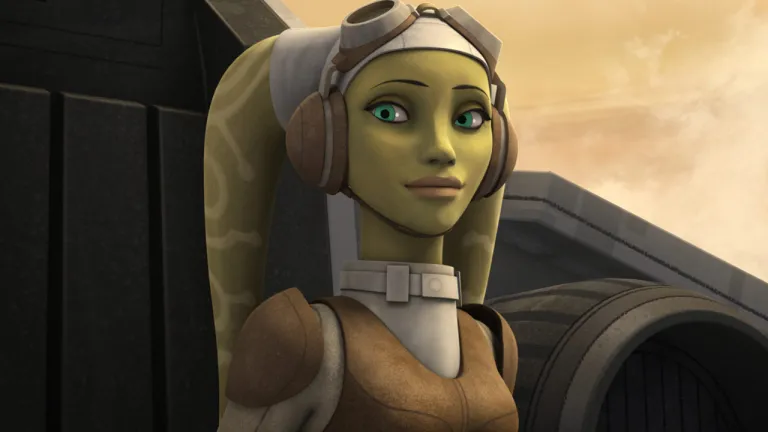

Hera Syndulla
Hera Syndulla is a leader of the Rebel Alliance who has been fighting for the freedom of all peoples since the Empire took over in 19BBY. She is from the planet Ryloth and is a Twi'lek as well as the daughter of revolutionist and public figurehead Cham Syndulla, so her fighting spirit definitely runs in the family.
Hera Syndulla is a good candidate because of her experience as a leader of the Rebel Alliance, as she went from being a part of an individual sector to helping to bring together the vast majority of the overall Rebel Alliance to bring down the Empire. She has had thousands of persons under her command and has been trusted with the most dangerous of missions for years. Her candidacy is based in truth and willingness to help others in their time of need.
Hera is advocating for equality of all species as well as freedom and rights for all species in the New Republic. She wishes for the galaxy to know that she is here for every individual and will be a stickler about those who attempt to take those freedoms away or attempt to harm others, but wishes for them to have a fiar trial in court. She does not stand for the Empire's ideals and will make sure to help to take down the Imperial bases and sects that still remain and to put them into a fiar trial for their crimes against life, the universe and everything.